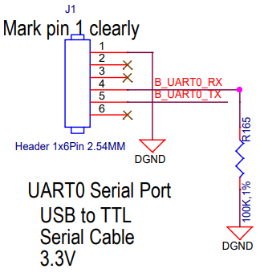
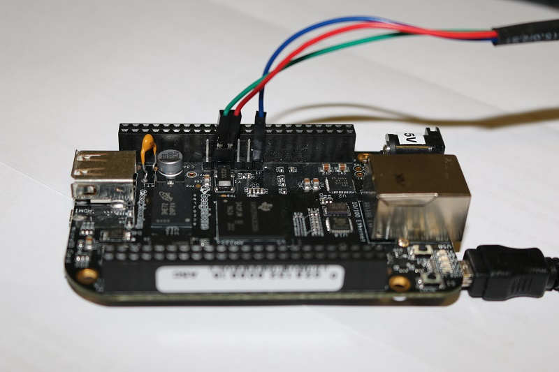

16. Bootloader - U-Boot
16.1 Objectives
After this lab you will be able to:
-
Set up serial communication with the target board.
-
Compile and install the U-Boot bootloader.
-
Use basic U-Boot commands.
-
Set up TFTP communication with the host machine.
16.2 Required tools
-
Ubuntu packages:
device-tree-compilerlibssl-devpartedpicocompython3-devpython3-distutilsqemu-system-armswigtftpd-hpaplus those from the previous labs.
-
Das U-Boot, either as:
-
-
Powered via generic USB (5 V).
-
Dedicated Ethernet connection.
-
-
A generic USB-to-UART cable, TTL levels, 3.3 V (do not exceed!), only TX/RX pins required.
16.3 Bootloader startup
As the bootloader is the first piece of software executed by a hardware platform, the installation procedure of the bootloader is very specific to the hardware platform.
There are usually two cases:
-
The processor offers nothing to ease the installation of the bootloader, in which case the JTAG has to be used to initialize flash storage and write the bootloader code to flash. Detailed knowledge of the hardware is of course required to perform these operations.
-
The processor offers a monitor, implemented in ROM, and through which access to the memories is made easier.
The AM3358 SoC on the BeagleBone falls into the second category. The monitor integrated in the ROM reads the SD card to search for a valid bootloader.
16.4 Serial communication
The BeagleBone serial connector is exported on J1 (the 6 pins close to one of the 48 pins headers). Using your USB-to-UART adapter, connect the ground wire (blue) to the pin closest to the power supply connector (pin #1), and the adapter TX (red) and adapter RX (green) wires to the pins 4 (board RX) and 5 (board TX), respectively.
| Board pin | Board signal | Cable signal | Cable color |
|---|---|---|---|
| J1 1 | GND | GND | Blue |
| J1 4 | RX | TX | Red |
| J1 5 | TX | RX | Green |


After insertion into the USB host, you have to re-assign it to the VirtualBox VM, via its menus.
Then, the Lubuntu VM should register it into the host /dev/ folder, as /dev/ttyUSB0 (or similar names for different adapter chips, like /dev/ttyACM0, /dev/ttyAMA0, etc.).
To communicate with the board through the serial port, install a serial communication program, such as picocom.
If you run ls -l /dev/ttyUSB0, you can also see that only root and users belonging to the
dialout group have read and write access to the serial console.
Therefore, you need to add your user to the dialout group.
Important: for the group change to be effective, you have to reboot your computer (at least on Ubuntu 22.04) and log in again.
A workaround is to run newgrp dialout, but it works only within that shell session — you have to repeat this command for each shell you open, until the next login session.
$ sudo apt install picocom
$ ls -l /dev/ttyUSB0
crw-rw---- 1 root dialout 188, 0 Apr 14 23:33 /dev/ttyUSB0
$ sudo adduser $USER dialout
$ newgrp dialout
Run picocom -b 115200 /dev/ttyUSB0 to start serial communication on /dev/ttyUSB0, with a baud rate of 115200 baud (the typical speed).
If you wish to exit picocom, press Ctrl+A followed by Ctrl+X.
$ picocom -b 115200 /dev/ttyUSB0
picocom v3.1
port is : /dev/ttyUSB0
flowcontrol : none
baudrate is : 115200
parity is : none
databits are : 8
stopbits are : 1
escape is : C-a
local echo is : no
noinit is : no
noreset is : no
hangup is : no
nolock is : no
send_cmd is : sz -vv
receive_cmd is : rz -vv -E
imap is :
omap is :
emap is : crcrlf,delbs,
logfile is : none
initstring : none
exit_after is : not set
exit is : no
Type [C-a] [C-h] to see available commands
Terminal ready
Terminating...
Thanks for using picocom
There should be nothing on the serial line so far, as the board is not powered up yet.
To speed up typing for reconnection, I suggest a tiny script:
$ sudo cat > /usr/bin/picocomBBB <<'EOF'
#!/bin/sh
picocom -b 115200 /dev/ttyUSB0
EOF
$ chmod +x /usr/bin/picocomBBB
This way we can type and run picocomBBB instead of the longer command line.
It is now time to power up your board by plugging in the mini-USB (BeagleBone Black case) or micro-USB (BeagleBone Black Wireless case) cable to your PC.
See what messages you get on the serial line. You should see U-Boot start on the serial line, if there was a valid U-Boot and SPL on the board’s eMMC.
$ picocomBBB
...
U-Boot SPL 2019.04-00002-g07d5700e21 (Mar 06 2020 - 11:24:55 -0600)
Trying to boot from MMC2
Loading Environment from EXT4... Card did not respond to voltage select!
U-Boot 2019.04-00002-g07d5700e21 (Mar 06 2020 - 11:24:55 -0600), Build: jenkins-github_Bootloader-Builder-137
CPU : AM335X-GP rev 2.1
I2C: ready
DRAM: 512 MiB
No match for driver 'omap_hsmmc'
No match for driver 'omap_hsmmc'
Some drivers were not found
Reset Source: Power-on reset has occurred.
RTC 32KCLK Source: External.
MMC: OMAP SD/MMC: 0, OMAP SD/MMC: 1
Loading Environment from EXT4... Card did not respond to voltage select!
Board: BeagleBone Black
<ethaddr> not set. Validating first E-fuse MAC
BeagleBone Black:
...
16.5 Source code
Enter the folder of this lab, that's going to become our main workspace folder:
You can now get U-Boot at the suggested version (git tag v2022.07).
Yes, I used an older version w.r.t QEMU (
v2023.01) because I had some troubles with USB initialization, which requires some investigation (anything deactivated within the recent defconfig?)
We're going to clone the git repository into the home folder, creating a new branch named after the embedded-linux-bbb tutorial just for convenience.
$ cd $LAB_PATH
$ git clone "https://source.denx.de/u-boot/u-boot"
$ cd u-boot/
$ label="v2022.07"
$ git checkout -b embedded-linux-bbb $label
Alternatively, you can directly unpack an archive of the suggested version. This is usually much faster than cloning a big git repository, despite losing all the features of a git repository.
$ cd $LAB_PATH
$ label="v2022.07"
$ wget "https://source.denx.de/u-boot/u-boot/-/archive/${label}/u-boot-${label}.tar.bz2"
$ tar xfv "u-boot-${label}.tar.bz2"
$ mv u-boot*/ u-boot
16.6 Configuration
Get an understanding of U-Boot’s configuration and compilation steps by reading its README file, and specifically the Building the Software section.
U-Boot comes with some sample configuration files for officially supported boards, under the configs folder, named with a _defconfig suffix.
Our BeagleBone Black board is based on an ARM Cortex A8, the Texas Instruments AM335X Sitara.
Among the officially supported configurations, the one that supports our boars isn't obvious: it's am335x_evm_defconfig (generic AM335 EValuation Module), not am335x_boneblack_vboot_defconfig (only for verified boot on our BBB). Let's make it effective.
$ cd $LAB_PATH/u-boot/
$ ls configs/ | grep am335
am335x_baltos_defconfig
am335x_boneblack_vboot_defconfig
am335x_evm_defconfig
am335x_evm_spiboot_defconfig
am335x_guardian_defconfig
am335x_hs_evm_defconfig
am335x_hs_evm_uart_defconfig
am335x_igep003x_defconfig
am335x_pdu001_defconfig
am335x_shc_defconfig
am335x_shc_ict_defconfig
am335x_shc_netboot_defconfig
am335x_shc_sdboot_defconfig
am335x_sl50_defconfig
phycore-am335x-r2-regor_defconfig
phycore-am335x-r2-wega_defconfig
$ make am335x_evm_defconfig
16.7 Build
To build U-Boot, we need to specify
the cross-compile toolchain we built
by setting a global variable CROSS_COMPILE.
The export keyword makes it available also to sub-processes, including make and the tools called by it.
We can choose between the full name arm-training-linux-uclibcgnueabihf- or the shortened alias arm-linux- as the prefix.
Also, remmeber to parallelize to save time.
$ TC_NAME="arm-training-linux-uclibcgnueabihf"
$ TC_BASE="$HOME/x-tools/$TC_NAME"
$ export PATH="$TC_BASE/bin:$PATH"
$ export CROSS_COMPILE=arm-linux-
$ export MAKEFLAGS=-j$(nproc)
We're going to use the menuconfig to refine the configuration to suit our needs.
The default configuration is fine for our needs, so you don't need any fine tuning, but you can take a look around.
See:
menuconfig
You can now <Save> (if needed) and make a backup copy of this configuration:
Install some packages required for compilation:
You can now build the bootloader.
You have to pass the DEVICE_TREE environment variable to make, to select which Device Tree has to be compiled: am335x-boneblack for the standard BBB (covered by this course).
Alternatively, if you wish to run just make, specify our board’s device tree name on Device Tree Control → Default Device Tree for DT Control option (DEFAULT_DEVICE_TREE, which defaults to am335x-evm).
This generates several binaries, including MLO and u-boot.img.
You can save them into a backup archive if you wish so:
16.8 Bootable SD card
The TI AM335 romcode will look for an MLO file (MMC Load) in a FAT partition on an SD card.
This is precisely what U-Boot compiled for us, together with the U-Boot binary image u-boot.img.
Let’s prepare an SD card with such a partition.
Plug the micro-SD card into your workstation. Ignore any actions by the file manager, so that no partitions are mounted automatically.
If using Windows as the host OS, the SD card might become corrupted upon insertion, because Windows wants to do its own business with it, messing up with partition data. This involves more operations w.r.t. a native Linux host OS as explained within the Bootlin tutorials, so let me add my procedures in quoted blocks like this one.
Instead of using the native SD card reader built into my laptop, I'm connecting via a generic USB SD card reader.
I insert the USB reader itself, without SD card, and pass control of this USB peripheral to VirtualBox.
Type the sudo dmesg command to see which device is used by your workstation. In case the device is /dev/mmcblk0, you will see something like in the following example.
Let's assign this name to a variable to be used afterwards.
$ sudo dmsg
...
[46939.425299] mmc0: new high speed SDHC card at address 0007
[46939.427947] mmcblk0: mmc0:0007 SD16G 14.5 GiB
...
$ SDCARD_DEV="/dev/mmcblk0"
$ SDCARD_DEVP="${SDCARD_DEV}p"
With an USB SD card reader, the device is usually a SCSI-like device (
/dev/sdX). In my Lubuntu VM, it's named/dev/sdd.
You can confirm your device was added to the device list, for exmaple vialsusbanddmesg.Lubuntu VM$ lsusb Bus 001 Device 004: ID 14cd:1212 Super Top microSD card reader (SY-T18) Bus 001 Device 001: ID 1d6b:0002 Linux Foundation 2.0 root hub Bus 002 Device 002: ID 80ee:0021 VirtualBox USB Tablet Bus 002 Device 001: ID 1d6b:0001 Linux Foundation 1.1 root hub $ sudo dmesg ... usb 1-1: new high-speed USB device number 4 using ehci-pci usb 1-1: New USB device found, idVendor=14cd, idProduct=1212, bcdDevice= 1.00 usb 1-1: New USB device strings: Mfr=1, Product=3, SerialNumber=2 usb 1-1: Product: Mass Storage Device usb 1-1: Manufacturer: Generic usb 1-1: SerialNumber: 121220160204 usb-storage 1-1:1.0: USB Mass Storage device detected scsi host5: usb-storage 1-1:1.0 scsi 5:0:0:0: Direct-Access Mass Storage Device 1.00 PQ: 0 ANSI: 0 CCS sd 5:0:0:0: Attached scsi generic sg4 type 0 sd 5:0:0:0: [sdd] Media removed, stopped polling sd 5:0:0:0: [sdd] Attached SCSI removable disk ... $ SDCARD_DEV="/dev/sdd" $ SDCARD_DEVP="${SDCARD_DEV}"Only now you can insert the micro-SD card into the USB reader.
Type the mount command to check your currently mounted partitions.
If any of its SD partitions are mounted, unmount them.
We'll erase the existing partition table by simply zero-ing the first 16 MiB of the SD card:
Now, let’s call the cfdisk command to create the partitions that we are going to use.
If cfdisk asks you to Select a label type, choose dos, as we don’t really need a gpt partition table for our labs.
In the cfdisk interface, create three primary partitions, starting from the beginning, with the following properties:
-
One partition, 64 MB big, with the
W95 FAT32 (LBA)partition type (cchoice).
Mark this partition as bootable. -
One partition, 32 MB big, that will be used for the root filesystem.
Due to the geometry of the device, the partition might be larger, but it does not matter.
Keep theLinuxpartition type. -
One partition filling the remaining space of the SD card image, to be used for the data filesystem.
Keep theLinuxpartition type.
Select Write when you are done.
You could've done something similar with a single
partedissue:$ sudo parted -s $SDCARD_DEV -- \ mklabel msdos \ mkpart primary fat32 1m 64m \ mkpart primary ext4 64m 96m \ mkpart primary ext4 96m -1s \ set 1 boot on \ print Model: Mass Storage Device (scsi) Disk /dev/sdd: 31.6GB Sector size (logical/physical): 512B/512B Partition Table: msdos Disk Flags: Number Start End Size Type File system Flags 1 1049kB 64.0MB 62.9MB primary fat32 boot, lba 2 64.0MB 96.5MB 32.5MB primary ext4 lba 3 96.5MB 31.6GB 31.5GB primary ext4 lba
We will create further partitions in a later lab, when we need them.
To make sure that partition definitions are reloaded by your workstation, remove the micro-SD card and insert it again, or run partprobe.
Now create a FAT32 filesystem on this new first partition:
$ sudo partprobe
$ sudo mkfs.vfat -a -F 32 -n boot "${SDCARD_DEVP}1"
mkfs.fat 4.2 (2021-01-31)
mkfs.fat: Warning: lowercase labels might not work properly on some systems
Ubuntu uses version
4.2ofmkfs.vfat, and the FAT generated by this version of the command is incompatible with what the TI AM335x romcode expects.
Passing the-aoption is workaround described on a Bootlin blog post.
You can now make your workstation automatically mount this partition by removing the micro-SD card and plugging it back. It should now be mounted on /media/$USER/boot/.
Now, copy the MLO and u-boot.img files to the SD card:
$ cd "$LAB_PATH/u-boot/"
$ sdcard_mnt="/mnt/sdcard_boot/"
$ sudo mkdir -p $sdcard_mnt
$ sudo mount -t vfat "${SDCARD_DEVP}1" $sdcard_mnt
$ sudo cp MLO u-boot.img $sdcard_mnt
$ sudo umount $sdcard_mnt
$ sudo rmdir $sdcard_mnt
You can now remove the micro-SD card from the host workstation.
You should always remove the micro-SD card from the USB reader before un-plugging the USB reader (or before releasing it from the Lubuntu VM).
If Windows takes control of the USB reader with the micro-SD card still inserted, Windows might corrupt the boot partition, making it unusable by the TI AM335 romcode.
16.9 Quick test
Remove power from BBB, connect the UART cable, insert the micro-SD card, and run picocomBBB in advance.
Be ready to press a key (e.g. Space) as soon as the board boots, just after the next instructions.
To boot the board on the external micro-SD card, you need to press and hold the USER button (S2, close to the USB host port), and then power-up the board. You can then release the USER button.
This seems like a very inconvenient way of booting the board, but the selection of attempting to boot from the external micro-SD card remains active across resets, until the board is ultimately powered off. So, you will just need to use the button a few times during the course.
If this is too inconvenient for you, you could use U-Boot on the external micro-SD card to flash a new version of U-Boot on the internal eMMC. This would allow you to boot without an external micro-SD card.
Here’s what you should get on the serial line:
U-Boot SPL 2022.07 (Apr 16 2023 - 15:43:05 +0200)
Trying to boot from MMC1
U-Boot 2022.07 (Apr 16 2023 - 15:43:05 +0200)
CPU : AM335X-GP rev 2.1
Model: TI AM335x BeagleBone Black
DRAM: 512 MiB
Core: 160 devices, 18 uclasses, devicetree: separate
WDT: Started wdt@44e35000 with servicing (60s timeout)
NAND: 0 MiB
MMC: OMAP SD/MMC: 0, OMAP SD/MMC: 1
Loading Environment from FAT... Unable to read "uboot.env" from mmc0:1...
<ethaddr> not set. Validating first E-fuse MAC
Net: eth2: ethernet@4a100000, eth3: usb_ether
Hit any key to stop autoboot: 0
=>
Make sure that the version and compile date are right. Otherwise, try again, because this means that you booted on the internal eMMC.
In U-Boot, type the help command, and explore the few commands available.
=> help
? - alias for 'help'
...
version - print monitor, compiler and linker version
16.10 Adding commands to U-Boot
Check whether the config command is available. This command allows to dump the configuration
settings U-Boot was compiled from.
If it’s not, go back to U-Boot configuration and enable it.
Let's search config (press / and enter config).
You should obtain a list like:
Symbol: CMD_CONFIG [=n]
Type : bool
Prompt: config
Location:
-> Command line interface
(1) -> Info commands
Defined at cmd/Kconfig:138
Selects: BUILD_BIN2C [=n]
Symbol: CMD_EECONFIG [=n]
Type : bool
Prompt: Enable the 'econfig' command
Location:
(2) -> ARM architecture
Defined at board/gateworks/gw_ventana/Kconfig:15
Depends on: ARM [=y] && ARCH_MX6 [=n] && TARGET_GW_VENTANA [=n]
...
Option marked (1) (CMD_CONFIG) looks like what we need. Press 1 then Y to enable it.
After you <Exit> once, you should confirm that your setting was applied.
You can also select the default board, as mentioned in the previous paragraphs, so that we don't need to pass the DEVICE_TREE option to make anymore.
Let's search DEFAULT_DEVICE_TREE and set it according to your board (e.g. am335x-boneblack).
You can then <Save> into .config and exit the program.
Save a backup and build again.
You should update the bootloader on the SD card, so you can test that the command is now available and working as expected.
If you are on a Windows host OS, always remember to insert and remove the SD card from the USB SD card reader while the USB reader is under control of the Lubuntu VM.
If Windows takes control of the USB reader with the micro-SD card still inserted, Windows might corrupt the boot partition, making it unusable by the TI AM335 romcode.
$ sudo umount ${SDCARD_DEVP}*
$ cd "$LAB_PATH/u-boot/"
$ sdcard_mnt="/mnt/sdcard_boot/"
$ sudo mkdir -p $sdcard_mnt
$ sudo mount -t vfat "${SDCARD_DEVP}1" $sdcard_mnt
$ sudo cp MLO u-boot.img $sdcard_mnt
$ sudo umount $sdcard_mnt
$ sudo rmdir $sdcard_mnt
Running the updated micro-SD card on the BBB:
U-Boot SPL 2022.07 (Apr 16 2023 - 15:54:05 +0200)
Trying to boot from MMC1
U-Boot 2022.07 (Apr 16 2023 - 15:54:05 +0200)
CPU : AM335X-GP rev 2.1
Model: TI AM335x BeagleBone Black
DRAM: 512 MiB
Core: 160 devices, 18 uclasses, devicetree: separate
WDT: Started wdt@44e35000 with servicing (60s timeout)
NAND: 0 MiB
MMC: OMAP SD/MMC: 0, OMAP SD/MMC: 1
Loading Environment from FAT... Unable to read "uboot.env" from mmc0:1...
<ethaddr> not set. Validating first E-fuse MAC
Net: eth2: ethernet@4a100000, eth3: usb_ether
Hit any key to stop autoboot: 0
=> config
#
# Automatically generated file; DO NOT EDIT.
# U-Boot 2022.07 Configuration
#
#
# Compiler: arm-linux-gcc (crosstool-NG 1.25.0.95_7622b49) 11.3.0
#
CONFIG_CREATE_ARCH_SYMLINK=y
...
# CONFIG_TOOLS_MKEFICAPSULE is not set
As you can see, the config command prints verbatim the content of the .config file that was used to build U-Boot.
16.11 Test environment
In the U-Boot prompt, make sure that you can set an environment variable:
Run reset to reboot the board, and then check that the foo variable is still set:
=> reset
...
Hit any key to stop autoboot: 0
=> printenv foo
## Error: "foo" not defined
Environment variables need to be saved across resets!
This time, call saveenv before resetting:
=> setenv foo bar
=> saveenv
Saving Environment to FAT... OK
=> reset
...
Hit any key to stop autoboot: 0
=> printenv foo
foo=bar
16.12 Networking
To load a kernel in the next lab, we have to setup networking between the host machine and the target machine.
See Host VM - Networking for information about the IP addresses for this lab.
On the U-Boot command line, you have to configure the environment variables for networking:
serverip for the host (server) machine, and ipaddr for the target machine, using the dedicated Ethernet port (eth2) as the first (ethprime).
To make these settings permanent, save the environment.
=> setenv ethprime eth2
=> setenv serverip 192.168.0.15
=> setenv ipaddr 192.168.0.69
=> saveenv
You can now test the connection to the host:
=> ping $serverip
link up on port 0, speed 100, full duplex
Using ethernet@4a100000 device
host 192.168.0.15 is alive
16.13 TFTP server
Let’s install a TFTP server on your host machine*, by the tftpd-hda package.
By default, files are stored under the /srv/tftp/ folder, which should be accessible by the by tftp group.
So, let's add our user to it.
$ sudo mkdir -p /srv/tftp
$ sudo chown -R tftp:tftp /srv/tftp
$ sudo chmod g+rw /srv/tftp/
$ sudo adduser $USER tftp
$ newgrp tftp
The
newgrp tftpcommand makes this group available to the current shell without restarting the host login session. Until the next login session, you have to type this command again for any new shells of the current login session.
To test the TFTP connection, put a small text file in the directory exported through TFTP on your host machine, then try to read it back as a TFTP client to check that the server is working properly.
$ echo "Hello, World!" > /srv/tftp/textfile.txt
$ cd $LAB_PATH
$ tftp localhost -v -c get textfile.txt
Connected to localhost (::1), port 69
getting from localhost:textfile.txt to textfile.txt [netascii]
Received 15 bytes in 0.0 seconds [6306 bit/s]
$ cat textfile.txt
Hello, World!
Back in U-Boot run bdinfo, which allows finding out that the DRAM starts at 0x80000000.
=> bdinfo
boot_params = 0x80000100
DRAM bank = 0x00000000
-> start = 0x80000000
-> size = 0x20000000
flashstart = 0x00000000
flashsize = 0x00000000
flashoffset = 0x00000000
baudrate = 115200 bps
relocaddr = 0x9ff65000
reloc off = 0x1f765000
Build = 32-bit
current eth = ethernet@4a100000
ethaddr = 54:4a:16:be:9e:ae
IP addr = 192.168.0.69
fdt_blob = 0x9df2fc00
new_fdt = 0x9df2fc00
fdt_size = 0x000152a0
lmb_dump_all:
memory.cnt = 0x1
memory[0] [0x80000000-0x9fffffff], 0x20000000 bytes flags: 0
reserved.cnt = 0x1
reserved[0] [0x9df2b9b8-0x9fffffff], 0x020d4648 bytes flags: 0
devicetree = separate
arch_number = 0x00000000
TLB addr = 0x9fff0000
irq_sp = 0x9df2fbf0
sp start = 0x9df2fbe0
Early malloc usage: 8f8 / 2000
Therefore, we will use the 0x81000000 address to test tftp, which is part of the board DRAM.
If you want to check where this value comes from, you can check the
AM335x and AMIC110 Sitara™ Processors Technical Reference Manual; it’s a big document (more than 5000 pages).
In this document, look for ARM Cortex-A8 Memory Map and you will find the SoC memory map.
You can see that the address range for the memory controller (EMIF0 SDRAM) starts at the address we are looking for.
You can also try with other values in the RAM address range.
From the U-Boot prompt, ask the TFTP server that file:
=> setenv ram_app_start 0x81000000
=> tftp $ram_app_start textfile.txt
link up on port 0, speed 100, full duplex
Using ethernet@4a100000 device
TFTP from server 192.168.0.15; our IP address is 192.168.0.69
Filename 'textfile.txt'.
Load address: 0x81000000
Loading: ################################################## 14 Bytes
1000 Bytes/s
done
Bytes transferred = 14 (e hex)
The tftp command should have downloaded textfile.txt from your development workstation into the board’s memory at location 0x81000000.
You can verify that the download was successful by dumping the contents of the memory (md, memory dump):
=> md $ram_app_start
81000000: 6c6c6548 57202c6f 646c726f 00000a21 Hello, World!...
81000010: 00000000 00000000 00000000 00000000 ................
81000020: 00000000 00000000 00000000 00000000 ................
81000030: 00000000 00000000 00000000 00000000 ................
81000040: 00000000 00000000 00000000 00000000 ................
81000050: 00000000 00000000 00000000 00000000 ................
81000060: 00000000 00000000 00000000 00000000 ................
81000070: 00000000 00000000 00000000 00000000 ................
81000080: 00000000 00000000 00000000 00000000 ................
81000090: 00000000 00000000 00000000 00000000 ................
810000a0: 00000000 00000000 00000000 00000000 ................
810000b0: 00000000 00000000 00000000 00000000 ................
810000c0: 00000000 00000000 00000000 00000000 ................
810000d0: 00000000 00000000 00000000 00000000 ................
810000e0: 00000000 00000000 00000000 00000000 ................
810000f0: 00000000 00000000 00000000 00000000 ................
You can now disconnect and turn off the board.
16.14 Backup and restore
If you have trouble generating binaries that work properly, or later make a mistake that causes you to lose your bootloader binary, you can find a working version under $LAB_PATH/data/, to be copied to $LAB_PATH/u-boot/:
16.15 Licensing
This document is an extension to: Embedded Linux System Development - Practical Labs - BeagleBone Black Variant
— © 2004-2023, Bootlin https://bootlin.com/, CC-BY-SA-3.0 license.